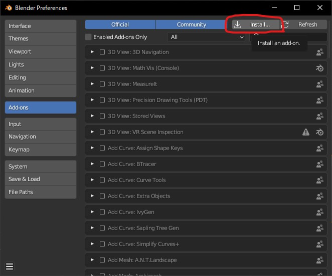
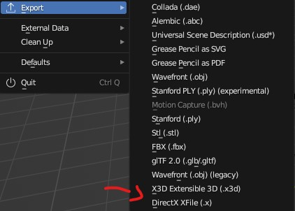
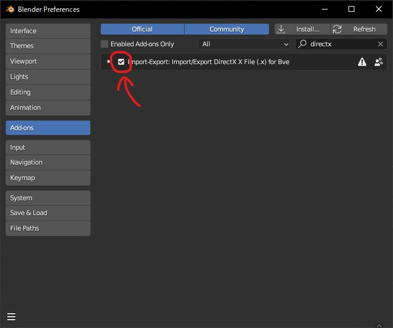

BlenderでXファイルを出力できるようにする
DirectX9で制作するうえで問題になるのが、3Dモデルの拡張子についてです。
DirectX9では主に3DモデルにはXファイル(.x)というものを使用することになっています。
ですがこれは昔に使われていた拡張子のものなので、最新のBlenderなどではExportの欄に存在しません。
大昔から使われているソフトなどを使えばXファイルで出力することはできるらしいのですが、
また新しく3D制作ソフトの動かし方覚えるのめんどい！！！！！！
できることなら唯一使えるBlenderでXファイルを出力したい！！！
というわけで何とか方法を探していたところ、神のアドオンを作ってくれている方を見つけました。
「Blender_XFileSupport_BVE」を導入する
今回はこちらのアドオンを使用します。
https://github.com/kusaanko/Blender_XFileSupport_BVE
※注意！！！
今回は
Blender3.6、
Blender_XFileSupport_BVE Ver2.2.0
を使用します。
現時点(2024/11/23)で最新バージョンのBlender4.1、Blender_XFileSupport_BVE Ver3.2.0で出力するとテクスチャが反映されない不具合があるようです。
私が試してみた際に動作が確認できたのが上記のバージョンです。
Githubより、「XFileSupport.py」をダウンロードしてきたら、Blenderメニューより、
「Edit」→「Preferences…」→「Add-ons」→「Install…」より、「XFileSupport.py」を選択してアドオンをインストール。

すると！「Export」の欄にXファイルが追加されているはずです。

追加されていない場合は再起動や、「Add-ons」の欄から、インストールしたアドオンが有効になっているかを確認してください。 
これにてインストールは完了です。
出力したファイルはDirectX9で使用することができます。
このブログが誰かの役に立てればいいな！
2024/11/23
ブログ記事一覧に戻る